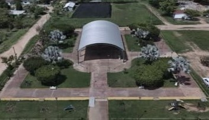

Novara
En Novara se ha vivido una transformación notable de sus servicios e infraestructura comunitaria.
Tiendas de abarrotes: De un único comercio familiar (Abarrotes Yoyis, registro 2014) se pasó a la presencia de cadenas como OXXO Federal Novara (que ofrece depósitos y retiros) y un Modelorama en las inmediaciones.
Agua potable: Mientras antes el suministro provenía de pozos y tanques domésticos sin tratamiento profesional, hoy opera la Purificadora Aqua Novara, que purifica y embotella agua en Colonia Marcial.
Espacios públicos y deportivos: El parque, antaño abandonado, fue rehabilitado en diciembre de 2024 con juegos infantiles, iluminación, áreas verdes y una cancha multiusos.
Viveros: La venta de plantas, antes informal, ahora cuenta con establecimientos consolidados como Vivero La Selva (desde 2010) y Vivero 20 de Noviembre.
Educación: Hasta hace poco los niños debían desplazarse fuera de Novara para estudiar; actualmente la Primaria 5 de Febrero (inaugurada en 1955 y con 70 años en 2025) atiende a 49 alumnos en 6 aulas, existe un Preescolar General para niños de 3 a 5 años, y opera en la localidad una Telesecundaria estatal en turno matutino.
